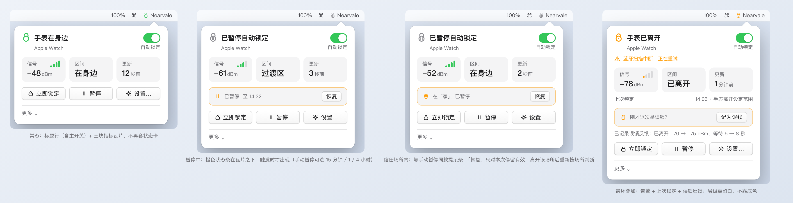

戴上手表走开，Mac 自动锁屏。
Nearvale 用 Apple Watch 与 Mac 之间的蓝牙距离，替你完成「离开工位就锁屏」这件总被忘记的事；回来时自动点亮屏幕，交给系统的「使用 Apple Watch 解锁」。

它会替你做什么
你不需要按任何快捷键，也不需要记得锁屏。手表在你手腕上，它就是你的钥匙。
离开即锁
手表超出设定范围并持续数秒，Mac 自动锁屏。
回来即亮
回到范围内点亮屏幕，解锁交给系统自带的「使用 Apple Watch 解锁」。
距离校准向导
保持日常坐姿 10 秒，按你的房间、Mac 和手表生成阈值，不用自己猜数字。
误锁反馈与自动调参
标记一次误锁，应用就会自动调整，越用越贴合你的习惯。
信任场所
在家或办公室自动暂停锁定：按网络识别，或在地图上选一个位置。
会议 / 演示暂缓
可选：有应用让屏幕保持常亮时先不锁，结束后补锁，设有最长暂缓上限。
一分钟上手
- 安装并打开 Nearvale菜单栏出现图标，跟随引导授权蓝牙。
- 绑定你的 Apple Watch在设置里选中手表即可，手表端无需安装任何东西。
- 开启「使用 Apple Watch 解锁」在 macOS 系统设置里打开，回来时就能自动解锁而不只是亮屏。
隐私：我们什么都不知道
一个整天守在你工位旁的工具，隐私必须放在第一位。
- 全部计算在你的 Mac 上完成，试用期间完全不联网。
- 购买后，应用只在激活、约每 7 天校验一次以及停用时联系 Dodo Payments，发送许可证密钥和一个随机设备标签，从不发送电脑名称。
- 没有埋点、没有追踪、没有崩溃上报；从不存储或传输你的密码。
- 定位是可选的，只在本机比对。
一次购买，终身使用
常见问题
- 需要什么设备？
- 一台带蓝牙、运行 macOS 14 Sonoma 或更高版本的 Mac，以及一块 Apple Watch。想回来时免手动解锁，请在系统设置里开启「使用 Apple Watch 解锁」。
- 手表上要装配套 App 吗？
- 不需要。Nearvale 直接读取手表本来就在发出的蓝牙信号。
- 它是安全产品吗？
- 不是，它是便利工具。蓝牙信号可能被遮挡或丢失，请保留强密码并开启 FileVault，重要场合手动锁屏。
- 试用结束后会怎样？
- 自动锁定会停止，应用会明确告诉你这一点。你的设置都会保留，输入许可证密钥后立即恢复。
- 换了新 Mac 怎么办？
- 在「设置 → 授权」点「停用这台 Mac」，再到新电脑上激活。最多可同时在 3 台 Mac 上使用。
- 遇到问题怎么办？
- 先看帮助手册，也可以发邮件到 support@nearvale.app，或在 GitHub 提交问题。